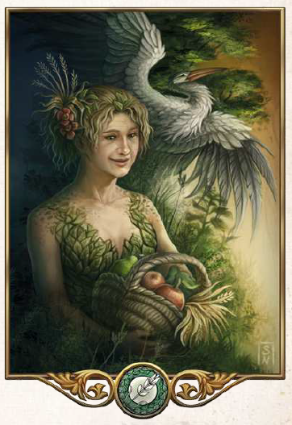

"Es gibt viel zu tun, bis du die Früchte deiner Arbeit ernten kannst. Dies gilt für alle Bereiche des Lebens und nur wer säht und stetig pflegt, kann schließlich ernten."
Aspekte: Fruchtbarkeit, Ackerbau, Heilkunst
Symbole/Wahrzeichen: Ährenbündel
Heiliges Tier: Storch (oder der Ibis im Süden)
Peraine ist die Göttin der Fruchbarkeit, des Ackerbaus und der Heilkunst. Sie wird von allen angerufen, die auf ihre Heilkraft vertrauen oder sich eine ertragreiche Ernte erhoffen. Damit hat sie eine sehr große Anhängerschaft, denn Bauern machen den Großteil der aventurischen Bevölkerung aus. Auch wenn die Kirche nicht nach politischer Macht strebt, so kann es sich dank der Zahl ihrer Anhänger kaum ein Adliger leisten, dauerhaft gegen ihren Willen zu handeln. Die hilfbereiten Priester der Peraine tragen einfache, grüne Kleidung, die manchmal mit Ährenmuster bestickt ist. Sie sind vor allem in ländlichen Gegenden anzutreffen, wo sie kleine Tempel oder einen Schrein betreuen, die Felder segnen oder Kranke pflegen. In den Städten unterhält die Kirche häufig Siechenhäuser oder größere Tempel. Zahlreiche Priester befinden sich jedoch auch auf Wanderschaft, um dort tatkräftig zu helfen, wo sie gebraucht werden. Der höchste Geweihte Peraines, der Diener des Lebens, hat das tobrische Ilsur als seinen Sitz - und damit zum Haupttempel - erkoren.